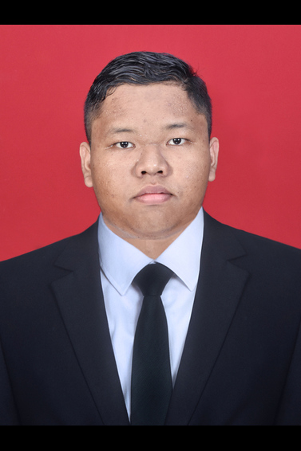

Muhammad Hikam Badriddujaa
Mahasiswa Universitas Airlangga, D4 Teknik Informatika
About Me
Saya adalah Muhammad Hikam Badriddujaa, seorang Mahasiswa di Universitas Airlangga (UNAIR). Saat ini saya sedang mengejar ilmu di bidang yang relevan dengan perkembangan teknologi masa kini, fokus pada rekayasa sistem yang efisien.
Sebelum melangkah ke jenjang perguruan tinggi, saya merupakan lulusan dari SMK Antartika 2 Sidoarjo, Jurusan Rekayasa Perangkat Lunak (RPL). Pengalaman di RPL membekali saya dengan dasar-dasar pemrograman, pengembangan web, dan logika berpikir sistematis.
Riwayat Pendidikan
-
Universitas Airlangga (UNAIR)
Mahasiswa, 2025 - Sekarang -
SMK Antartika 2 Sidoarjo
Jurusan Rekayasa Perangkat Lunak (RPL), 2022-2025
Keahlian (Skills)
MySQL, PostgreSQL
Python, JavaScript
HTML5, Tailwind CSS
PHP, Node.js
Debugging & Analisis
Project
Aplikasi Sekolah (RPL Project)
Proyek akhir di SMK. Menggunakan PHP dan MySQL untuk mengelola data guru, data siswa, laporan peminjaman, dan laporan pengembalian. Menekankan pada efisiensi database dan antarmuka yang mudah digunakan.
Website Edukasi Responsif
Membuat website Edukasi modern menggunakan HTML, Tailwind CSS, dan JavaScript. Fokus pada desain responsif, edukasi masyarakat di Indonesia, optimasi performa, dan fitur ganti tema.
Platform Belajar Bahasa Indonesia
Mengembangkan platform interaktif berbasis web untuk memudahkan siswa mempelajari kaidah Bahasa Indonesia, seperti PUEBI, struktur teks, dan jenis-jenis paragraf, dengan visualisasi dan kuis.
Contact
Contact dan akun GitHub saya untuk informasi lebih lanjut.